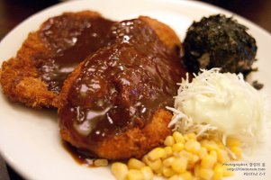

영현이
영현이는 동국대 경영학과 12학번이다.영현이랑 결혼하고싶다
영현이는 키도 크다
영현이의 가슴은 자기주장이 강하다
영현이가 너무 좋다.
영현이는 라면을 7봉지 먹는다.
진짜 먹보다. 돼지다. 완전 두툼 왕 돈가스이다.

근데 귀여우니 봐준다.

영현아 그거는 먹는거 아니야...
근데 요새 살빠져서 그냥 일반 돈가스이다.
영현이 식단 조절 너무 오래한다.
슬프다..ㅠㅠ
곧 후 불면 날아갈 것 같다..
물론 마른게 싫다는 건 아니고, 좋다^^